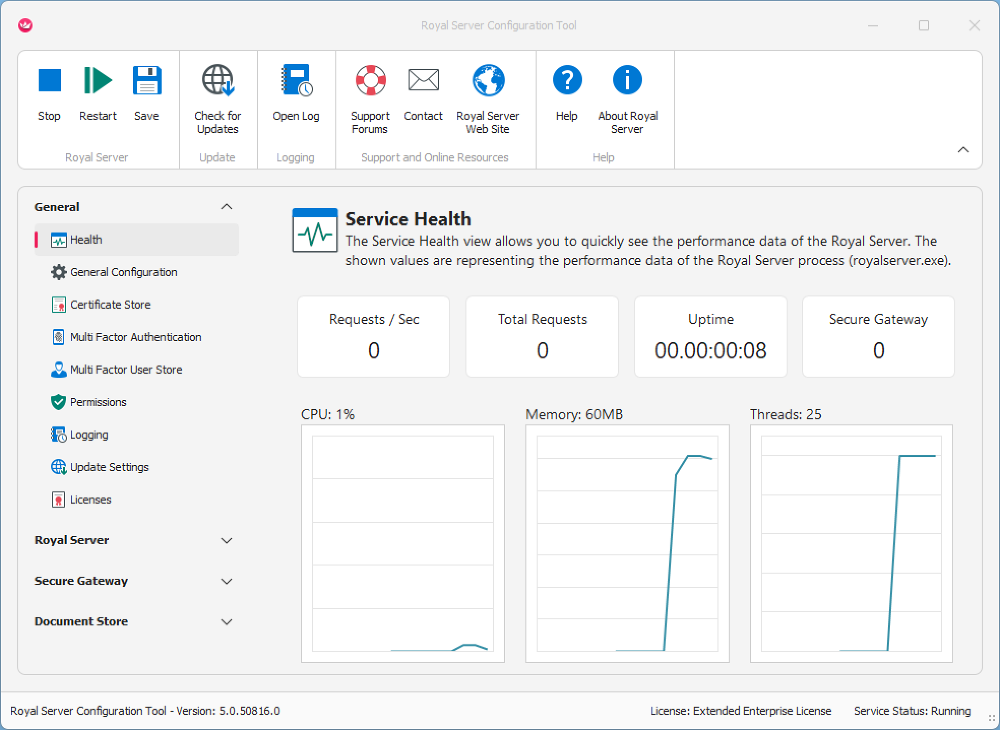

Getting Started
Navigating the User Interface
The basic user interface looks like this:

The ribbon for basic operations
At the top you can see the ribbon bar which allows you to
- Manage the status of the Royal Server service (start, stop or restart the service).
- Save configuration changes
- Check for updates (including beta versions)
- Display the log viewer
- Access help and support resources
Manage the status of Royal Server
Royal Server can be started, stopped and restarted from the Ribbon.
Saving configuration changes
Whenever you change the configuration, you can save the changes.
Note
After a configuration change, you must restart Royal Server for the change to take effect.
Checking for updates
Check if there is an update for your version of Royal Server. You can configure the update check settings.
Open the log
Royal Server keeps a log of all its actions, warnings and errors. Click to open the log viewer.
Access help and support resources
Use our Website and our support forums if you have questions or want to open a ticket. Additionally, you can always send us an email. The Help button opens our online help.